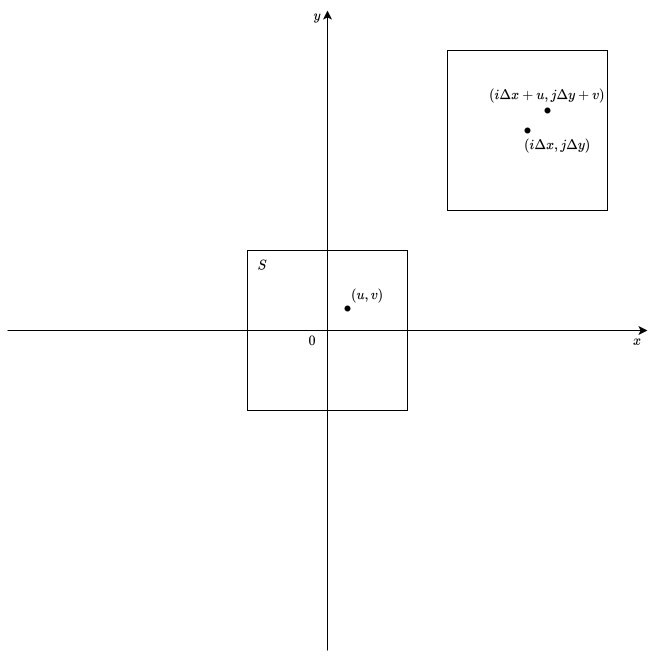
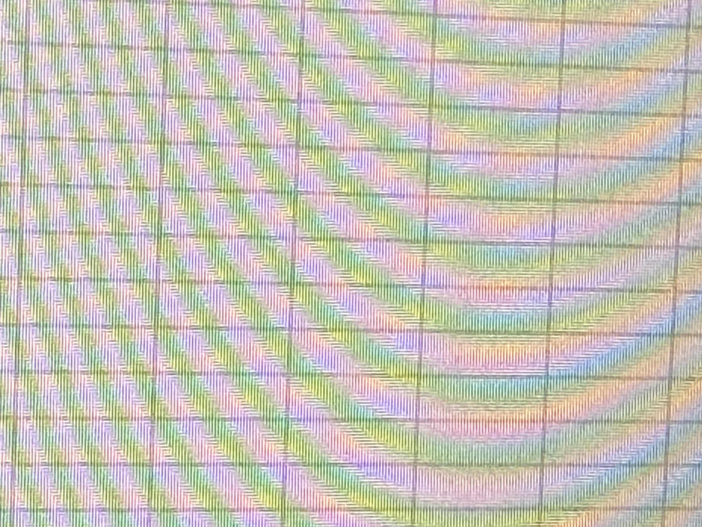

標本化, 量子化の具体的な手法について
発表者: 加藤大侑
範囲: pp.21 ~ pp.29
標本化
\[f_{ij} = \iint\limits_S f(i\Delta x + u, j\Delta y + v)h(u, v) dudv\] \[i, j = 0, \pm 1, \pm 2, ...\]
\(h(u, v)\)は画素の濃度値を決めるのに適当な重み関数
\(S\)は適当な領域
\(\Delta x, \Delta y\)は標本点の間隔(画素の一辺の長さ)である.
\((i\Delta x, j\Delta y)\)を中心とする領域(画素)について, 2次元フィルタ\(h(u, v)\)を使って重みづけをし, 画素の濃度値に変換する.

重み関数の例
-
\( h(u, v) = \begin{cases} \infty & \text{if } u = v = 0 \\ 0 & otherwise \end{cases} \)
\(u=v=0\)の時だけ\(\infty\)となる, すなわち標本点の濃度をそのまま画素の濃度値とする疑似関数.
2次元デルタ関数 -
\( h(u, v) = \begin{cases} \frac{c}{\Delta x \Delta y} & \text{if } |u| \leq \frac{\Delta x}{2}, |v| \leq \frac{\Delta y}{2} \\ 0 & otherwise \end{cases}\)
\((i\Delta x, j\Delta y)\)を中心とする画素の濃度値の平均値を定数倍して用いる関数.
2次元方形波 -
\( h(u, v) = \begin{cases} \frac{c}{\Delta x^2} & \text{if } u^2 + v^2 \leq \Delta x^2 \\ 0 & otherwise \end{cases}\)
\((i\Delta x, j\Delta y)\)を中心とする円の濃度値の平均値を定数倍して用いる関数. ただし, \(\Delta x = \Delta y\)とする.
2次元円形波 -
\(h(u, v) = \frac{1}{2\pi \sigma^2} exp\{-\frac{u^2 + v^2}{2\sigma^2}\}\)
\((i\Delta x, j\Delta y)\)を中心として, 外側に行くほど重みが小さくなるように設計された関数. ガウシアンフィルタなどでも用いられる.
2次元ガウス関数
2次元標本化定理
折り曲げ誤差
標本点間隔を定めたときに, ナイキスト間隔と一致する周波数より高い周波数の成分は折り曲げ誤差となり, 実際の周波数より低い周波数の成分として現れてしまう.

これを解決するためには, あらかじめナイキスト間隔と一致する周波数より高い周波数の成分を取り除いておく.
2次元畳み込み積分との類似性
\(S' = -S = \{(-u, -v) | (u, v) \in S\}, h'(u, v) = h(-u, -v)\)という変換によって, \[ \begin{align*} f_{ij} &= \iint\limits_{S} f(i\Delta x + u, j\Delta y + v)h(u, v) dudv \\ &= \iint\limits_{S'} f(i\Delta x - u, j\Delta y - v)h'(u, v) dudv \\ &= (h' * f)(i\Delta x, h\Delta y) \end{align*} \] となる.
周波数領域での影響
\[ \mathcal{F}((h' * f)) = \mathcal{F}(h') \cdot \mathcal{F}(f) \] より, \(h\)に適切な関数を選ぶことで, 高周波数成分を除去しての標本化が可能.
量子化
標本化を終えた後の画像の濃度値は連続値であるので, これをデジタル化するために, \(L_1, L_2, \dots, L_{N}\)の\(N\)個の値のいずれかに変換する. この時の\(N\)を量子化レベル数という. \(T_1 \lt T_2 \lt \dots \lt T_{N-1}\)となる\(N-1\)個の定数を用いて, 変換後の濃度値を\(g\)とすると, \[ g = \begin{cases} L_1 & \text{if } f \le T_1 \\ L_2 & \text{if } T_1 \lt f \le T_2 \\ \dots \\ L_{N-1} & \text{if } T_{N-2} \lt f \le T_{N-1} \\ L_N & \text{if } T_{N-1} \lt f \end{cases} \]
直線量子化
隣り合う閾値の間隔を等しくして量子化する方法.
すなわち, \[\forall i, j \in \{2, 3, ..., N-1\} |T_i - T_{i - 1}| = |T_j - T_{j - 1}|\]である.
計算コストが低く, 実装が簡単.
非直線量子化
連続濃度値\(f\)について適当な関数(例えば対数関数)\(\phi\)を用いて変換し, 変換後の値に対して直線量子化を施す方法.
データに偏りがある場合などに, より頻度の高いデータに対して量子化レベルを多く割り当てることができて, 精度の向上に役立てられる.
2次元多重画像
2次元デジタル画像が複数枚組になってまとまった情報を表す. 新たな添え字\(k\)を用いて, \(\mathbf{F}^k = \{f_{ij}^k\}, \mathbf{F}_k = \{f_{ijk}\}\)のように表す.(\(f_{ijk}\)は\(k\)番目の画像の\(i, j\)番目の画素の濃度値)
2次元多重画像の例
-
2次元動画像(系列画像)
\(k\)は時間を表す.
-
カラー画像
\(k\)は色(RGB)に対応する.
-
投影図
\(k\)は平面図, 立面図, 側面図に対応する.
-
マルチスペクトル画像
可視光の外の領域の電磁波も記録した画像. 異なる\(k\)は異なるセンサに対応する.
-
ステレオ画像
\(k\)は左目, 右目に対応する.
-
多視点画像
\(k\)は視点に対応する.
3次元画像
\(z\)軸方向を加えた\(f(x, y, z)\)を3次元連続画像と呼び, それを合同な小区画に分割して標本化して, 量子化を行ったものを3次元デジタル画像と呼ぶ.
例としてX線CT画像やMRI画像などがあげられる.
2次元多重画像では違う成分の画像は全く別物であったのに対して, 3次元画像はz軸方向にも連続性を持っている.
多次元多重画像
同様にして, X線CT像の経時的変化のような多次元動画像や, X線CT像とNMR・CT像の組のような, 多次元多重画像を考えることができる.
多次元, 多重画像は2次元画像と同じように処理できる場合も多いが, 以下のような固有の部分がありうる.
- 動画像における対象物の動きの分析.
- 多重画像における対象物の対応付け.
- 立体視などによる3次元空間の距離情報の取得.
- 3次元画像におけるトポロジー的性質の解析.(例えば, 3次元画像によって腫瘍の数を数えることで良性か悪性か判断するなど)